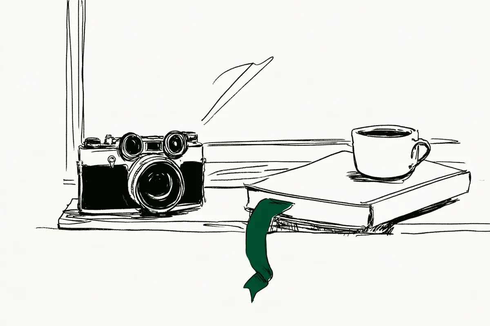

この記事には広告(アフィリエイトリンク)が含まれます。
現在地: 買う前に迷ってる
ニコン Zfの後悔・デメリット、買った人の不満と手放した理由

ニコン Zfを自分で買った・使っていると書いた58人のうち、手放したと書いた人は23人、手放す予定の人が1人、別の機種に替えた・戻ったとだけ書いた人が6人でした。この30人が書いた理由は、重さ・大きさ(13人)とグリップ(8人)が中心です。手放した側は全員読み、それ以外は上限の60人で打ち切ったので、割合としては読めません(noteでZfを持つと書いた234人のうち、数えたのは35人。数え方の偏り)。
このサイトの基準(後悔・使わなくなった・無駄だった)で後悔の側に入るのは、使わなくなった・使う機会が減ったと書いて手放した4人です。うち1人は、買うときに比べた機種を「α7C IIにしておけばよかった」とも書いています。「後悔」の語を悔やむ形で使ったのは1人で、Z5IIへ替えたことを「ちょっとだけ後悔もあったりします」と書いた人でした。買ったことを「後悔した」と書いた本人は、数えた中では見つかっていません(後悔の節)。
Zfは、ニコンが2023年10月に発売したミラーレス(言葉の意味)です。センサーはフルサイズ(言葉の意味)で、フィルムカメラのような見た目をしています。「Z f」「ZF」とも書かれます。名前の似た「Z fc」(ニコンの表記はZfc)は2021年発売の別の機種で、この記事では数えていません(Z fcとの違い)。私はカメラを持っていないので、人の声を集めて整理する側で、買う・買わないはすすめません。
- まだ買う前で、後悔しないか知りたい → 早見表、「後悔」と書いた人、手放した・替えた人、初心者・最初の1台の人、Z fcとの違い
- 買ったばかりで、重さや握りにくさが気になる → 重さの節、グリップの節、バリアングルの節
- 使っていて出番が減ってきた、別の機種が気になる → 使わなくなって手放した人、買い足した人・迷った人
目次
- ニコン Zfのデメリット・欠点の早見表: 不満の種類、人数、その人がどうしたか
- ニコン Zfで「後悔」と書いた1人(替えたあと)と、使わなくなって手放した4人
- ニコン Zfを手放した・替えた30人: 理由と行き先を、人ごとに
- ニコン Zfを残して別の機種を買い足した4人と、手放すことを考えた人
- ニコン Zfのデメリット「重い・大きい」: 公式の質量は約710g
- ニコン Zfのデメリット「グリップが浅い」: 別売りのグリップを足した人、足さなかった人
- ニコン Zfのデメリット「バリアングル」: 写真だけ撮る人が書いた、開く手間
- ニコン Zfのデメリット「似合うレンズが少ない」: 見た目と大きさ
- ニコン Zfのそのほかのデメリット: 操作・カードスロット・レリーズ・AF・バッテリー・写り・不具合
- ニコン Zfを書いた人の立場: 初心者・最初の1台と確定できたのは1人、経験者は39〜46人
- ニコン Zfの公式の数字と販売状況(2026年11月時点)
- 数え方と偏り
- ニコン Zfは買わない方がいい?読んだ範囲の答え
ニコン Zfのデメリット・欠点の早見表: 不満の種類、人数、その人がどうしたか
58人のうち不満を1つでも書いた49人を、1つの話題=1行で分けました。私の読み方で、1人が2つ以上に入ります。右の列はその人がどうしたかの内訳で、( )はそのうちカメラの紹介もしているサイトの書き手の人数です。
表の中の言葉の意味
| 種類(私の読み方) | 書いた人数 | その人がどうしたか(内訳) |
|---|---|---|
| 本体 | ||
| 重さ・大きさ・横幅(持ち歩き・カバン・山や旅行・先々の重さ・レンズを付けた重さ) | 28人 | 手放した8(6)、手放す予定1、替えた4(1)、買い足した2、手放したと書いていない13(8) |
| グリップ・握り(浅い・持ちにくい・大きなレンズで不安・後付けは重さと見た目が変わる) | 18人 | 手放した5(4)、手放す予定1、替えた2、買い足した2、手放したと書いていない8(5) |
| 背面の画面がバリアングル(横に開いて回る方式。写真だけ撮るには開く手間がある)。手放したと書いていない2人は、のちに慣れた・気にならなくなったとも書く | 7人 | 手放した4(3)、手放す予定1、手放したと書いていない2(2) |
| 操作・ボタン・設定(設定を登録できない・ピント位置を動かすレバーがない・ボタンの数と位置) | 8人 | 手放した3(2)、手放す予定1、買い足した1、手放したと書いていない3(3) |
| カードスロット(電池室の中にある・SDカードを2枚は差せない) | 4人 | 手放した2(2)、手放す予定1、手放したと書いていない1(1) |
| 有線のレリーズ(シャッターを切るケーブル)が使えない | 3人 | 手放した1、買い足した1、手放したと書いていない1(1) |
| 三脚まわり(縦に据えるL字の金具に制約がある) | 2人 | 替えた1、手放したと書いていない1(1) |
| AF(動くもの・カメラ任せの感触・瞳に合わない) | 3人 | 手放した1、替えた1、手放したと書いていない1(1) |
| バッテリー・充電(減りが早い・充電に時間がかかる・充電器が付いてこない) | 2人 | 手放す予定1、手放したと書いていない1(1) |
| のぞき窓(ファインダー)が見えにくい・端が見えない | 2人 | 替えた1、手放したと書いていない1 |
| 写り(暗い場所・解像感・撮ったままの色・併用機との違い) | 4人 | 手放した1(1)、買い足した1、手放したと書いていない2 |
| そのほか(1人ずつ: 夏場の熱とスリープからの戻り・連写と動画・底の質感・Zマウントのシステム) | 4人 | 手放した3(2)、手放したと書いていない1(1) |
| レンズ | ||
| 見た目の合うレンズが少ない・レンズが大きい・キットの40mmの写り | 10人 | 手放した5(3)、手放す予定1、替えた1、買い足した1、手放したと書いていない2(1) |
| 使い方 | ||
| 出番が減った・使わなくなった・撮りたいものがない | 5人 | 手放した4(2)、手放したと書いていない1(1) |
| 不具合・故障(知恵袋の相談) | ||
| SDカードが刺さらない・シャッター速度が動かせなくなる・電池を止める部品が折れた | 3人 | 相談3 |
並びは人数順ではなく、行の分け方で順位が変わります(重さとグリップを1行にまとめれば37人です)。良い点は入れていません。
58人の結果です。右の列は、カメラの紹介もしているサイトの書き手の人数です。
| 結果(私の読み方) | 人数 | うちカメラの紹介もしているサイトの書き手 |
|---|---|---|
| 満足(不満の記述なし) | 1人 | 1人 |
| 満足と不満の両方を書き、手放したとは書いていない | 18人 | 11人 |
| Zfを残して別の機種を買い足した | 4人 | 0人 |
| 手放したと書いた | 23人 | 11人 |
| 手放す予定と書いた | 1人 | 0人 |
| 替えた・戻ったとだけ書いた | 6人 | 1人 |
| 困りごとだけで、評価はない | 5人 | 0人 |
手放したと書いた23人のうち3人は、のちに買い直しています。手放した23人とそれ以外の人数は、打ち切りで決まった数です(数え方の偏り)。
ニコン Zfで「後悔」と書いた1人(替えたあと)と、使わなくなって手放した4人
「Zf 後悔」の検索(Yahoo!検索の日本向け、2026年11月18日)で上に出るのは、個人のブログとnote、海外の掲示板(Reddit)、動画でした。Redditと動画は、書き手を確かめられないので数えていません。
このサイトでは、後悔・使わなくなった・無駄だった、のどれかを本人が書いていれば後悔の側として数えます。「使わなくなった」に当たるのは4人で、全員が手放したと書いた人でした。おにやすみさん(カメラの紹介もしているサイトです)、使う機会が減っていったH_HIROYAさん、出番が野鳥だけになったyoriknitさん、撮りたいものがなかったsr14th.comの書き手です(それぞれの節)。おにやすみさんは、買うときに比べた1台を「α7C IIにしておけばよかった」とずっと思っていた、とも振り返りました。「後悔」の語はなく、買うときの選び方を悔やむ書き方です(私の読み方)。近いのが、仕事での出番が減って私用に回したと書くarcarrsgitzoの書き手(カメラの紹介もしているサイトです)です。
「後悔」の語を悔やむ形で使ったのは1人。noteの(´・ω・｀)さんは、2025年4月にZ5IIへ替えた記事で、見た目はZfのほうが好きだったとして「ちょっとだけ後悔もあったりします」と書いています。替えたことについての語で、売ったとは書いていません。
合わなかった、という書き方の人もいます。
Nikon Zfは佇まいに憧れて購入したカメラでしたが、私には合いませんでした。
Zfには満足できなかった。
数に入れなかった文が2つあります。永遠丸さん(下の節)の2026年7月の記事には「深い後悔の念」とありますが、小説になぞらえた文章で、悔やむ対象はZfを含む選ばなかった道の全体でした。デジタル試しうちの書き手(カメラの紹介もしているサイトです)は、1年後のレビューの目次に「後悔なし。」と置き、同じ記事に握りにくさなどの残念な点も書いています。買ったことを「後悔した」「無駄だった」と書いた人は、数えた中では見つかっていません。いない、という意味ではありません(数え方の偏り)。
ニコン Zfを手放した・替えた30人: 理由と行き先を、人ごとに
売った・手放した・下取りに出したと本文に書いた人が23人、下取りに出す予定と書いた人が1人、替えた・戻ったとだけ書いた人が6人です。30人のうち12人がカメラの紹介もしているサイトの書き手でした。
行き先は、同じニコンのZシリーズが11人(Z5II 4人・Z8 2人・Z6III 2人・Z6II・Z30・Z fc)、富士フイルム6人、ソニー4人、ライカ2人、OM SYSTEM・オリンパス2人、パナソニック1人、ニコンの一眼レフ1人。代わりを買っていない人が3人です。Z5IIへ替えた4人が挙げたのは、握り・重さ・横幅・カードスロットの位置でした。行き先は探した機種名の影響を受け、手放した人数はほかの機種の記事と比べられません。
小見出しの並びは人数の順位ではありません。1人を1か所に置いたのは私の読み方で、重さ・大きさを書いた人は30人のうち13人、下の小見出しに置いたのはそのうち10人です。
重さ・大きさを挙げた10人(手放した6人・予定1人・替えた3人)
おにやすみさんは、富士フイルムの機種から替えて約1年使いました。途中で小さな機種を足し、そちらが主役になって、2025年5月に手放しています。
自分にとってはあまりにも重かった。
次はソニーのα7C IIです。
のりまるさんは、買って半年ほどの2026年4月に下取りに出しました。今は持てても、この先だんだん持ち出さなくなるのは嫌だ、という判断で、一緒に持ち歩く小さなフィルムカメラと釣り合わない、とも。代わりはオリンパスのPEN-F。5日後の記事では、いちばんの理由は重さで、手放したことは悔やんでいない、と書きました。
桜橋さん(カメラの紹介もしているサイトです。Z50IIの記事にも出てきます)は、Z fcからZfへ移った人です。2025年6月の記事によると、重くて持ちづらいことがこたえ、ズームレンズとの釣り合いもあって、Z5IIに替えました。
軽さと握りやすさは正義だった。
替えた先のZ5IIについての一文です。
永遠丸さん(カメラの紹介もしているサイトです)は、2026年2月に買い、4月4日の記事で、本体が重すぎたとして、ニコンの機材をすべて売ったと書きました。買って2か月ほどです。10月の振り返りにはこうあります。
レンズの重さにも限界を感じ、ニコン一式をすべて売却。
行き先はライカでした。
canalbirdの書き手(カメラの紹介もしているサイトです)は、ソニーと迷ってZfを選び、約1年後にこう書きました。
Zf＋PowerShot V1を下取りに出してα7CIIを迎えました。
旅行に連れて行く気になれない重さで、旅用にコンパクト機を足していました。ニコンのレンズは3本試してどれも合わなかった、とも。
四季の移ろいさん(カメラの紹介もしているサイトです)は、Z fcの記事では、Zfが楽しくてZ fcを手放した人でした。2025年4月の記事は、題に手放すとあり、本文はこうです。
今、Nikon Zfとレンズ一式を査定中です。
街歩きに絞るので重くて大きい機材は持たない、として富士フイルムのレンズ一体型へ。気になった点はバリアングル、街歩きには少し大きいこと、底の質感です。
手放す予定と書いたのは幸せな時間の作り方の書き手で、届いて3か月の記事です。前から使う富士フイルムの機種のほうが向くと分かり、その週に下取りに出す、と。
一番最初に感じたのは想像以上に重い、ということでした。
浅いグリップ、40mmの次に付けたいレンズがないこと、電池の減り、バリアングル、充電器が付かないことなども並べています。
替えた・戻ったとだけ書いた3人は、売った・下取りの語がない人です。(´・ω・｀)さんは理由を3つ挙げました。
①Zfは横幅が大きく（10mm)、カバンなどの取り回しが難しかったこと。
残りは、後付けのグリップを足すと重さが増すこと、のぞき窓が期待ほど見やすくなかったこと(設定のせいかも、と本人)です。S.JP.Chibaさんは、大ぶりのカメラを下げていると急な動きに対応できないとして、富士フイルムのX-E5に替えました。狼さん(カメラの紹介もしているサイトです)は、握りの出っ張ったカメラが苦手でZfを選んだ人です。
だが、いかんせん重さが…。
本体が重いぶんレンズを軽いものに偏らせてしまう、と続き、ソニーに戻っています。
グリップを挙げた4人(手放した3人・替えた1人)
Photographer nonさん(カメラの紹介もしているサイトです。Z50IIの記事にも出てきます)は、2024年10月にZ6IIIへ移りました。挙げたのは2点で、握る出っ張りと、設定を登録して呼び出すモードが、どちらもZfにない点です。Z6IIIのほうが質量は大きいのに握ると軽い、とも書き、2026年8月の記事でも理由は同じでした。
極小グリップとバリアングルの相性がすこぶる悪く売却。
Takuさん(カメラの紹介もしているサイトです)が、手放した機材の欄に書いた1行です。代わりの機種は買っていません。
naokiho3615さん(Z30の記事にも出てきます)は、Z8の控えをZfからZ30に替えました。
指が引っかからず、持ちづらい分重さを感じやすいです。
L字のグリップでも足りなかったこと、三脚に縦に据える良い金具がないことも挙げています。後半の記事に、売ったという語はありません。
まなぞうちゃん２くらぶブログの書き手(カメラの紹介もしているサイトです)は、Zfとキットのレンズを下取りにして、中古のZ5IIにしました。
グリップ感の不足：長時間撮影で手が疲れる場面が多く、実用性に課題を感じました。
連写が途中で止まること、動画の性能、横幅、ボタンの少なさ、カードスロットの位置も並べています。
バリアングルを挙げた2人(どちらも手放した)
H_HIROYAさん(カメラの紹介もしているサイトです。X-M5の記事にも出てきます)は、Z8を買った直後に、シルバーのZfを足しました。
一つ目は、バリアングル液晶です。
開く動作が面倒で、手に取る回数が落ちていったそうです。2つ目はレンズでした。
見た目を取ると写りで妥協することになり、写りを取ると見た目が合わない。
代わりは買っていません。
komorebi_94さんは、2024年2月に買い、5月の記事で、写真だけの自分にはバリアングルが手間で、性能も持て余すと書きました。6月7日の記事で手放すと決め、新しく入れたのはZ6IIです。振り返りの記事には、再生ボタンの位置、有線のレリーズが使えないこと、合うレンズがないことも並んでいます。2年後のことは下の節に。
当時はバリアングルがどうしてもしっくりこず、Z6Ⅱに買い替えた。
レンズを挙げた2人(手放した1人・戻った1人)
なぁ Hideさんは、2025年の年末に売り、ソニーのα7IIIへ移りました。記事の見出しの1つです。
Zfに似合うZレンズは１本も無い
ズームを付けた姿に落胆し、40mmでは物足りなかった、と書いています。
KureKureTacolaさんは、Z fcを売ってZfにした人です。
Zfって案外大きい…
Z fcを知っている目には太く見え、合うレンズも多くないとして、Z fcへ引き返しています。Zfを売ったとは書いていません。
使わなくなった・撮りたいものがなくて手放した2人
yoriknitさん(Z50IIの記事にも出てきます)は、2025年12月の機材の振り返りで手放したと書きました。Zfにいちばん向かない野鳥の撮影のときしか持ち出さなくなった、という理由で、鳥のためにパナソニックの機種へ移っています。
しかしながら、Nikon Zf を手放した後の喪失感が思いの外大きくて、、いつかまた買い直すかも。
2026年4月に買ったのはZ5IIでした。
sr14th.comの書き手は、2024年9月の記事で、少し前まで売るか悩んでいたが「Nikon Zfを手放さなくてよかったです」と書き、11月の記事で、1か月ほど前に売ったと明かしました。
最も大きな理由は撮りたいものが無かったから。
街で撮るには自分には大きくて重い、使わない物は置いておきたくない、とも。1か月後に、富士フイルムのX-T50を買っています。おにやすみさんとH_HIROYAさんも、使わなくなった・使う機会が減ったと書いた人です(上の節)。
カードスロット・写りの違い、システムとAFの感触を挙げた2人
HAMANAKAさん(カメラの紹介もしているサイトです)は、Z5IIからZfに替え、2025年10月にZ5IIへ戻りました。
SDスロットがバッテリー室にあるZfは一度手に持たないとSDカードが取り出せない。
中身が同じはずの2台で写りが違って見えた、という感想もあります。
橘No.9さんは、2025年11月にソニーから移り、半年ほどでニコンの一眼レフへ替えました。
Zマウントシステムには、まだ乗り切れないというか、イマイチ頼りないところがある。
かしこいAFに任せて撮っている気がして寂しい、物としての手ごたえが欲しい、とも書いています。
カメラの不満ではない理由の3人、理由を書いていない5人
005 akkiyさんは、カメラの不満ではない事情で、手持ちから売る物を選ぶことになりました。最初の候補がZfで、浅いグリップ、街歩きの撮影が減ったこと、白黒に切り替えるスイッチを使わないことを挙げています。Z8は残しました。
spicaさんは、富士フイルムの2台を買うために一式を手放しました。
割とZfは気に入っていて、特に不満に思うことはなかった。
JTC Photographerさん(カメラの紹介もしているサイトです)は、ライカを買うために下取りに出した人です(次の節)。
理由を書いていない5人は、次のとおりです。
- Imaちゃんさん: Z fcからZfへ、そのZfを下取りにZ8へ
- ᴘᴀᴍᴇ̌ᴛ̌(pamet)さん: 2024年末に手放したと書く人。2026年2月の旅ではZfを使い、3月にデジタルカメラを全部手放しました(間の経緯は不明)
- noteの書き手: 2025年10月に売ってZ6IIIへ
- noteの別の書き手: 2025年4月に売って富士フイルムへ(次の節)
- 知恵袋の質問者: 2026年8月の質問で、使ってきた機種をZf、Z8の順に並べています(前の年の質問と同じ人だというのは私の読み方)
一度手放して、買い直した3人
- noteの書き手(上の箇条の4人目)。2025年4月に売り、9か月後にZfへ戻ったと書いています。理由の記事は見つかっていません。2026年9月の記事の写真の説明に、Zfがあります
- JTC Photographerさん。2024年10月にライカを買うために下取りに出し、2026年1月にライカを売って買い直しました。8月の記事でもZfを持ち歩いています
- komorebi_94さん。2026年5月21日にシルバーを買い直し、同じ記事にこう書きました
ただ届いたばかりで恐縮だが、既にドナドナすることが決まっている。
別のカメラの抽選に当たったためで、翌週には人手に渡る、とあります。Zfが出てくるのは5月27日の記事が最後で、売ったという記事はありません。
ニコン Zfを残して別の機種を買い足した4人と、手放すことを考えた人
𝐔𝐠(Ug)さんは、2024年10月に替えるか2台にするかで迷い、翌年4月にZ5IIを足しました。記事の見出しの1つです。
Zfは使いにくくて不満があります
後付けのグリップで見た目が崩れる、かといって外すと扱いにくい、似合うレンズは重くて値も張る、と。出番の多いほうを残すつもりだと書いています。
カナオさん(Z30の記事にも出てきます)は、山に持って行くには重いとして、軽いZ30を足しました。Aoiさんは、先に買ったZfの色の出方が少し物足りず、富士フイルムのX100VIを足した人です。
一度Zfを手放そうともしたが、モノクロの描写力ではFujifilmよりも好みだった。
知恵袋のGINさんは、2025年9月の質問で、握りが頼りなくて大きなレンズと合わないこと、有線のレリーズが使えないことを挙げました。翌年の質問では、手持ちがZ8とZfになっています。
キムラさんは、仕事で一眼レフ用のレンズを付けると平らなグリップでは不安で、別のZに替えることも考えましたが、後付けのグリップを足して使っています。売るといくらになるかを無料で知る方法は売るなら、まず無料で相場を知るに。
ニコン Zfのデメリット「重い・大きい」: 公式の質量は約710g
仕様ページの質量は、バッテリーとメモリーカードを含めて約710g、本体のみで約630gです。重さ・大きさは、手放した・替えた側(13人)にも、買い足した人(2人)にも、手放したと書いていない側(13人)にも出た不満でした。
手放したと書いていない側で、紹介をしていない書き手の声です。
これだけ褒めちぎったZfですが、やはり大きくて重いです。
さじょんさんは、2026年9月の記事でもZfを使っています。いぬっさんは、2025年4月に富士フイルムの機種から替え、その年末の記事でこう書きました。
重いから持って行くのはやめようとは、一度も思わなかった。
1年の記事では、よくない点の1つめに重さと大きさを置き、のぞき窓の端が見えにくいこと、小さく軽いレンズが少ないことも挙げています。さる。さんは思った以上に重いと書き、akitiさんは、浅いグリップと暗い場所での写りを弱点としたうえで、少し重いとも。知恵袋には、小さなカメラを足すか迷う相談があります。
Zfで唯一不満に感じているのは、重くて一日中持ち歩くのが少し大変なことです。
カメラの紹介もしているサイトの書き手は8人。TAKUさん(重さの記事にも出てきます)、Rollさん(Z50IIの記事にも)、Andyさんは短所として、akilans.comとblog.sprg.jpの書き手は手にした印象として、ゆゆねこカメラ(life-y.tokyo)とまちろぐの書き手は登山や持ち歩きの場面で書きました。arcarrsgitzoの書き手は次の節に。質量の数字の読み方は重さの記事にあります。
ニコン Zfのデメリット「グリップが浅い」: 別売りのグリップを足した人、足さなかった人
ニコンには別売りの後付けグリップ(Zf-GR1)があります。グリップ・握りを書いた18人のうち、後付けのグリップや金具に触れたのは9人でした。
- 足して使っている4人: キムラさん、さじょんさん(L字の金具で補う)、Andyさん、酔人日月抄外伝の書き手(純正のグリップでひとまず解決。カメラの紹介もしているサイトです)
- 足したあと外した2人: arcarrsgitzoの書き手は、最初の印象に重さ・握り・背面の画面の3つを挙げ、後付けは合わずに外して、持ち方を変えました。もう1人はRollさんです
- 足しても足りずに替えた1人: naokiho3615さん
- 足すと重くなる・見た目が変わると書いた2人: (´・ω・｀)さん(Z5IIへ替えた)、𝐔𝐠さん(Z5IIを買い足した)
Rollさん(カメラの紹介もしているサイトです)は、付けたグリップなどを外した記事で、こう書きました。
グリップがないと指の力が必要になるため、どうしても本体が持ちにくくなってしまうのが難点だ。
題の「手放した」は付属品の話です。後付けに触れた9人は、足して使っている4人、足したあと外した2人、足しても足りずに替えた1人、重さや見た目が変わると書いた2人でした。
ニコン Zfのデメリット「バリアングル」: 写真だけ撮る人が書いた、開く手間
公式の仕様は「バリアングル式8cm/3.2型TFT液晶モニター」です。不満に書いた7人のうち5人は手放した・手放す予定の人で(人ごとの節)、残る2人はカメラの紹介もしているサイトの書き手でした。酔人日月抄外伝の書き手は、上下に傾く方式が好みのままだが1年でやっと慣れた、と書いています。arcarrsgitzoの書き手は、翌月の記事で、バリアングルと有線のレリーズの件で仕事では使いにくく、私用のカメラになったとしました。書かれたのは、写真を撮るときの開く手間と、傾くだけの方式との好みです。
ニコン Zfのデメリット「似合うレンズが少ない」: 見た目と大きさ
レンズの不満を書いたのは10人で、手放した・替えた側が7人です(人ごとの節)。おにやすみさんは、Zマウントはレンズが大きい、という点を挙げました。ほかは、買い足した𝐔𝐠さんと、手放したと書いていない2人です。いぬっさん(重さの節)と、ゆゆねこカメラの書き手(カメラの紹介もしているサイトです。Z fcの記事にも出てきます)です。
ニコン純正レンズでは、以下の3本以外は外観のマッチングがイマイチ。
レンズの声の中心は、見た目の合うものが少ないことと、大きさでした。キットの40mmの写りに触れたのは、H_HIROYAさんとなぁ Hideさんです。
ニコン Zfのそのほかのデメリット: 操作・カードスロット・レリーズ・AF・バッテリー・写り・不具合
操作・ボタン・設定。 8人。設定を登録して呼び出す機能、ピント位置を動かすレバーがないことと、ボタンの数や位置です。
カードスロット。 4人。電池室の中にあることを書いたのが3人、SDカードを2枚は差せないことが1人です(公式はSDとmicroSDの2つ)。
有線のレリーズ・三脚まわり。 レリーズは3人。arcarrsgitzoの書き手が、本体の作りでいちばんの不満に挙げました。
ハード面の一番の不満がレリーズケーブルが使えないことです。
GINさんとkomorebi_94さんも、夜の撮影で困ると書きました。三脚用の金具の制約は2人です。
AF。 3人で、中身は1人ずつ違います。モノスクラムの書き手(カメラの紹介もしているサイトです)は動くものでは他社の速い機種に届かない、橘No.9さんはカメラ任せの感触、知恵袋の質問者は瞳に合わないことが多い(使ってきた全機種で、と本人)。
バッテリー・充電・熱。 モノスクラムの書き手が3か月目に書いた困った点は4つで、動くもののAF、夏場に熱を持つこと、充電に時間がかかること、スリープから戻るときの間です。1年後も手放していない、と。幸せな時間の作り方の書き手は、電池の減りと、充電器が付いてこないことでした(公式の数字)。
写り。 4人。暗い場所(akitiさん)、撮ったままの色(Aoiさん)、併用機との違い(HAMANAKAさん)、知恵袋の解像感の相談(キットのレンズのせいかも、と本人)です。
不具合・故障。 知恵袋に3件。SDカードが刺さらなくなった、シャッター速度が勝手に変わって動かせなくなる、電池を止める部品が折れたという相談で、評価は書かれていません。
ニコン Zfを書いた人の立場: 初心者・最初の1台と確定できたのは1人、経験者は39〜46人
前に別のカメラを使った、ほかの機種を併用していると本文で読めた人は46人です。うち7人は根拠が弱く(前の機種が書かれていない、フィルムカメラの話だけ、など)、確かなのは39人。最初の1台と本文で確定できたのは1人で、どちらとも分からない人が11人います。
手放した・替えた30人は、29人が経験者、1人が分からない人でした。最初の1台として買って手放した人は見つかっていませんが、確定できたのが1人だけなので、最初の1台の人がどうなるかは、この58人からは何も言えません。
その1人はTezlogの書き手(カメラの紹介もしているサイトです)で、買って2か月目の記事です。58人のうち不満の記述がなかったのは、この1人だけでした。2024年8月より後の記事にZfは出てきません。「初心者」と名乗る人がほかに2人(まちろぐの書き手と、知恵袋の質問者)、「初めてのミラーレスカメラ」と書いた質問者が1人いて、3人とも最初の1台とまでは書いていません。最初に買ったカメラの声はこちらの記事に。
ニコン Zfの公式の数字と販売状況(2026年11月時点)
ニコンの仕様ページ・製品ページ・特長のページ(AF・信頼性)・ミラーレスの製品一覧・公式通販ニコンダイレクトの商品ページを、2026年11月18日〜19日に見た値です。
| 項目 | 公式の記載 |
|---|---|
| 発売 | 2023年10月27日(ブラック)。シルバーは2025年9月26日 |
| 質量 | 約710g(バッテリーおよびメモリーカードを含む、ボディーキャップ、アクセサリーシューカバーを除く)。本体のみ約630g |
| センサー | フルサイズ(ニコンの呼び名はFXフォーマット)、有効2450万画素 |
| ファインダー | 電子ビューファインダー、約369万ドット |
| 背面モニター | バリアングル式8cm/3.2型TFT液晶モニター(タッチパネル)、約210万ドット |
| 手ブレ補正 | イメージセンサーシフト方式5軸補正(本体の中でセンサーを動かす方式。言葉の意味) |
| オートフォーカス | ハイブリッドAF(位相差AF/コントラストAF)。被写体検出は人物・犬・猫・鳥・車・バイク・自転車・列車・飛行機の9種類 |
| シャッター・連写 | シャッタースピードダイヤル使用時 1/8000〜4秒。高速連続撮影(拡張)で約14コマ/秒 |
| カードスロット | SDカードとmicroSDカードのダブルスロット(特長のページ) |
| 撮影可能コマ数 | ファインダーのみで約360コマ(パワーセーブONで約410コマ)、モニターのみで約380コマ(同 約430コマ)。CIPA(カメラの業界団体)の規格に準拠、40mm f/2のレンズを付けた値 |
| 電池・付属品 | 電池はEN-EL15c。付属品はバッテリー、ストラップ、USBケーブル、アクセサリーシューカバー、接眼目当て、ボディーキャップ。充電器・ACアダプターは付属品になく、別売り |
| 防塵防滴・温度 | 特長のページに「Z8 と同等の優れた防塵・防滴性能」(すべての条件で保証するものではない、という注記つき)。使用温度は0℃〜40℃ |
| 別売りのグリップ | Zf用エクステンショングリップ Zf-GR1 |
| 現行の構成 | ボディー(ブラック・シルバー)、Zf 40mm f/2(SE)レンズキット(ブラック・シルバー) |
ニコンダイレクトでは、2026年11月18日の時点で、ボディー2色とレンズキット2色の4つとも「買い物かごに入れる」の表示があり、販売終了の表示はありませんでした。仕様は変わるので、表の数字も自分で仕様ページで確かめてください。
Z fcとの違い: センサーの大きさ・質量・本体の手ブレ補正・シャッター
Z fcは、見た目の近い別の機種です。Z fcの仕様ページを2026年10月18日に見た値と並べました。
- センサー: Zfはフルサイズ、Z fcはAPS-C(フルサイズより小さい規格)
- 質量(バッテリーとメモリーカードを含む): Zfは約710g、Z fcは約445g
- 本体の手ブレ補正: Zfはあり、Z fcはなし(レンズ側の補正)
- シャッターの最高速(ダイヤル使用時): Zfは1/8000秒、Z fcは1/4000秒
58人の中には、Z fcを先に使っていた人が5人、ZfからZ fcへ戻った人が1人います。Z fcを手放した人・買い直した人の声は、Z fcの記事の手放した人の節と買い直した人の節に。
値段と在庫の確かめ方(楽天市場の検索リンク)
手放した・替えた30人の理由は、重さ・大きさ、浅いグリップ、バリアングル、レンズ(見た目の合うものが少ない・大きいなど)、使わなくなったことなどでした。手放したと書いていない人も、重さ・グリップなどの不満を書いています(早見表)。楽天市場の検索リンクを1つ置きます。置く条件は、購入リンクのない本人の体験が2人以上あり、不満の側(満足以外の結果の人)の声があることで、Zfは当てはまりました。上の理由を読んで、自分の使い方には関係なさそうだと思った人が、値段や在庫を確かめるためのリンクです。検索結果には、別の機種のZ fcや、グリップ・ケースなどのアクセサリーも混ざるので、本体の名前が「Zf」かどうかを確かめてください。下のリンクは『Nikon Zf』の名前で楽天市場を検索します。
数え方と偏り
数えたのは、自分でZfを買った、または使っていると書いた58人(note35人・個人ブログ14人・知恵袋の質問者9人)です。Z fcを買った人、借りて書いた人、買う前の相談、紹介・比較の記事、評価がほとんどない人、本人の体験と確かめられなかった書き手は数えていません(名前は読んだ一覧に)。Z fcからZfへ移った人と、ZfからZ fcへ戻った人は数えています(Z fcの声はZ fcの記事に)。分け方は私の読み方です。
打ち切りについて。 人数の上限(60人)の手前の58人で止めました。手放した・替えた人は、見つかった候補を全員読んで入れています。それ以外の側は、noteでは持っていることを示す語の多い順に、ブログでは「後悔」の検索の上位の本人と、最初の1台・初心者と書く本人を足して打ち切りました。Zfの近くに持っていることを示す語が出るnoteの書き手は234人で、数えたのは35人。打ち切った人の全文は読んでいません。手放した23人も、それ以外の人数も、この打ち切りで決まった数で、後悔・不満・最初の1台の人数にも効きます。手放す人が多いのか、手放したと書く人が見つかりやすいのかは分かりません。
偏りは両方の向きにあります。
- 手放した側が厚く出る向き。「手放した」「売った」「下取り」などの語と、次の機種の名前(約45語)から探しました
- 手放した側を取りこぼす向き。続きの記事は、Zfの名前と、手放す・売却・下取り・お別れ・乗り換え・買い直すの語で本文を探して読みました。これらの語を使わない手放し方や、機種名の出ない記事は読み落としえます
- 良い側が厚く出る向き。手放したと書いていない側のブログは「後悔」の検索の上位から足したので、紹介もしているサイトの長い期間のレビューが多くなりました。買い直した3人が見つかったのも、手放した側を全員読んだからです
- 手放した・替えたと書いていない23人のうち4人(𝐔𝐠さん、akilans.com・arcarrsgitzo・Tezlogの書き手)は、その後の記事にZfが出てこず、今も持っているかは確かめられません。
- カメラの紹介もしているサイトの書き手は24人(購入リンクか広告の表記を機械で確かめました)
- 見つからなかったもの。買ったことを後悔したと書いた人、本体の手ブレ補正を不満に書いた人、熱で止まったと書いた人、バッテリーを理由に手放した人、キヤノンへ移った人は、この集め方では見つかりませんでした。いない、という意味ではありません。声の年は2023年11月〜2026年11月です
ほかに数えなかったのは、販売店・レンタル・買取・メディアのページ、照合できないReddit・YouTube・X・Instagram・Threads、それに価格.comの掲示板とレビュー(規約が私的・非営利目的に限るため、引用せず人数にも入れていません)です。
ニコン Zfは買わない方がいい?読んだ範囲の答え
買わない方がいい、とも、買った方がいい、とも、読んだ声からは言えません。どちらが多いかは、この集め方では分かりません。読んだ58人は、次のように分かれました。
- 手放したと書いた人が23人、手放す予定の人が1人。重さ・大きさ、グリップ、バリアングル、レンズ(見た目の合うものが少ない・大きいなど)、使わなくなった・撮りたいものがない、という理由のほか、理由を書いていない人、ほかのカメラを買うためだった人もいます(3人はのちに買い直しました)
- 替えた・戻ったとだけ書いた人が6人。行き先はZ5II・Z8・Z30・Z fc・富士フイルム・ソニーです
- Zfを残して別の機種を買い足した人が4人(山用の軽い機種、色の好みの1台、主力のZ8、どちらかを売るつもりのZ5II)
- 不満を書いて、手放したとは書いていない人が18人。カメラの紹介をしていない書き手は7人で、重さ、グリップ、暗い場所での写り、解像感、のぞき窓、レンズを挙げています
- 不満を書いていない人が1人
公式の数字は上の表、Z fcとの違いはこちらから自分の目で確かめてください。買う前の順番は初めてのカメラ、最初の一台は何で決めた?に。
ほかの機種の声と、買う前の確認
- キヤノン EOS R50の後悔・デメリット、買った人の不満と手放した理由
- ソニー α6400の後悔・デメリット、買った人の不満と手放した理由
- ニコン Z fc(Zfc)の後悔・デメリット、買った人の不満と手放した理由
- OM-D E-M10 Mark IVの欠点・後悔、買った人の不満と手放した理由
- キヤノン EOS R10の後悔・デメリット、買った人の不満と手放した理由
- 富士フイルム X-M5の後悔・デメリット、買った人の不満と手放した理由
- ニコン Z30の後悔・デメリット、買った人の不満と手放した理由
- ニコン Z50IIの後悔・デメリット、買った人の不満と手放した理由
- ソニー ZV-E10 IIの後悔・デメリット、買った人の不満と手放した理由
- LUMIX G100Dの後悔・デメリット、買った人の不満と手放した理由
- OM-5 Mark IIの後悔・デメリット、買った人の不満と手放した理由
- ソニー α6700の後悔・デメリット、買った人の不満と手放した理由
- 初心者が最初に買ったカメラ、口コミで多かった機種と後悔の声
- カメラを買うか迷ったら読む順番 ― 買う前に確かめる6つ
次に読むなら
この記事で読んだ92件
体験談86件(58人の出典。note 57件、個人ブログ18件、知恵袋11件)、数えなかったnote・ブログ、公式ページ6件に分けています。
体験談57件(note 35人の出典)
- note(おにやすみ)「ありがとうZf。」(経験者、重くて使わなくなった・Zマウントはレンズが大きい、手放した(α7C IIへ)、2025年。カメラの紹介あり)
- note(おにやすみ)「フルサイズ ZfからPEN EP-7へ。マイクロフォーサーズの心地よさ。」(同じ人、手放す半年前に小さな機種を足した記事、2024年。カメラの紹介あり)
- note(なぁ Hide)「Nikon Zfは売った。D700は残った。【迷走するZマウントプロダクトデザイン】」(経験者、似合うレンズがない・人気の機種で照れくさい、手放した(α7IIIへ)、2026年)
- note(H_HIROYA)「シルバーにひと目ぼれして、半年も持たずに手放した。Nikon Zf」(経験者、バリアングル・見た目の合うレンズが少ない・使う機会が減った、手放した(代わりは買っていない)、2026年。カメラの紹介あり)
- note(005 akkiy)「Z50Ⅱを買って、Z8の良さを再確認した話」(経験者、カメラの不満ではない事情で売る物を選んだ・グリップが浅い、手放した(Z8を残した)、2025年)
- note(aritakakanazawa)「約1年間利用したNikon Zfに、愛を込めて。」(経験者、理由は書かれていない、手放した(富士フイルムへ)、2025年)
- note(aritakakanazawa)「約1年間利用したGFX50SⅡ + Mitakon 65mm f1.4に、愛を込めて。」(同じ人、9か月後にZfへ戻ったと書く、2026年)
- note(aritakakanazawa)「Canon AF35M ファーストロール」(同じ人、写真の説明にZf、2026年)
- note(Imaちゃん)「Nikon NIKKOR Z 50mm f/1.8S」(経験者、Z fcから。理由は書かれていない、手放した(Z8へ)、2026年)
- note(橘No.9)「Fマウントは完成したシステムだと思うから」(経験者、Zマウントのシステムが頼りない・AFがカメラ任せに感じる、手放した(ニコンの一眼レフへ)、2026年)
- note(橘No.9)「初めてのNikon Zfで逗子海岸散歩」(同じ人、ソニーから移った月の記事、2025年)
- note(HAMANAKA)「帰ってきたZ5ii」(経験者、カードスロットが電池室にある・併用機と写りが違って見えた、手放した(Z5IIへ戻った)、2025年。カメラの紹介あり)
- note(のりまる)「君は僕の友達だ この世は悲しい事だらけ」(経験者、先々の重さ・ほかのカメラと大きさが釣り合わない、手放した(PEN-Fへ)、2026年)
- note(のりまる)「それは、ただ、触覚と、聴覚と、そして、大いなる視覚の恋でございます。」(同じ人、5日後の記事。いちばんの理由は重さ、手放したことは悔やんでいない、2026年)
- note(ᴘᴀᴍᴇ̌ᴛ̌)「今年の写真12選」(経験者、理由は書かれていない、2024年末に手放した、2025年)
- note(ᴘᴀᴍᴇ̌ᴛ̌)「和歌山・大阪への旅（和歌山編）」(同じ人、2026年2月の旅でZfを使っている、2026年)
- note(ᴘᴀᴍᴇ̌ᴛ̌)「気づけばLeica M6」(同じ人、2026年3月にデジタルカメラを全部手放した、2026年)
- note(spica)「GFX50SⅡとX100Ⅵを購入した」(不満はなかったと書く、ほかの2台を買うために手放した、2025年)
- note(Photographer non)「NIKON「Z6III」開封の儀 【Zfからの買い替え】」(経験者、グリップがない・設定を登録するモードがない、手放した(Z6IIIへ)、2024年。カメラの紹介あり)
- note(Photographer non)「カメラが重いのは質量ではなくグリップ感｜カメラと写真」(同じ人、重さは質量より握った感じだと書く、2026年。カメラの紹介あり)
- note(桜橋)「私のカメラ遍歴(2024〜2025)Canon・Nikon」(経験者、Z fcから。重さと持ちにくさ、手放した(Z5IIへ)、2025年。カメラの紹介あり)
- note(Taku)「機材選びの旅が終わったので、選び抜いた仲間を紹介します」(経験者、小さいグリップとバリアングルの相性、手放した(代わりは買っていない)、2024年。カメラの紹介あり)
- note(yoriknit)「私のカメラ。 ｜ 2025」(経験者、野鳥にしか使わなくなった、手放した(パナソニックの機種へ)、2025年)
- note(yoriknit)「おかえり Z 。 ｜ Nikon Z5II」(同じ人、のちにZ5IIを買った、2026年)
- note(koosawa93)「Nikon、Leica、Fujifilm、OM System——2025年機材沼を泳ぎ切った記録」(経験者、理由は書かれていない、手放した(Z6IIIへ)、2026年)
- note(komorebi_94)「Nikon Zfを買ったそれから」(経験者、写真だけの自分にはバリアングルが手間・性能を持て余す、手放した(Z6IIへ)、2024年)
- note(komorebi_94)「結局のところ」(同じ人、手放すと決めた記事、2024年)
- note(komorebi_94)「Nikon Z6Ⅱがやってきた」(同じ人、新しく入れたのはZ6II、2024年)
- note(komorebi_94)「備忘録：『Nikon Zfを使って』」(同じ人、振り返りの記事。再生ボタンの位置・有線のレリーズが使えない・合うレンズがない、2024年)
- note(komorebi_94)「Nikon Zfとの再会」(同じ人、2年後に買い直し、翌週には人手に渡ると書く、2026年)
- note(komorebi_94)「Nikonのモノクロはいい。」(同じ人、買い直したZfで撮った記事、2026年)
- note(JTC Photographer)「ライカQ2を売ってニコンZfを買いました。」(経験者、ライカを買うために下取りに出し、2026年1月に買い直した、2026年。カメラの紹介あり)
- note(JTC Photographer)「真夏のカメラ運用:カメラバッグを使わない最適解決定版！！」(同じ人、2026年8月もZfを持ち歩いている、2026年。カメラの紹介あり)
- note(永遠丸)「「MFTで生きていく」と誓った舌の根も乾かぬうちに、ルミックスを売ってシグマFP2を買った話」(経験者、レンズの重さに限界を感じた、手放した(ライカへ)、2026年。カメラの紹介あり)
- note(永遠丸)「暗黒の日 —— 世界のすべてに搾取され、私が光を殺した朝【記事200本記念】」(同じ人、2026年4月4日の記事。本体が重すぎたとしてニコンの機材をすべて売った、2026年。カメラの紹介あり)
- note(永遠丸)「ニコンの名残り ——カズオ・イシグロ『日の名残り』より——」(同じ人、小説になぞらえた文章。Zfを含む選ばなかった道を思い返す、2026年。カメラの紹介あり)
- note((´・ω・｀))「ニコン初心者がZｆからZ5IIに乗り換えたお話」(経験者、横幅・後付けのグリップで重さが増す・のぞき窓が見えにくい、Z5IIに替えた(少し後悔もあると書く)、2025年)
- note(KureKureTacola)「ZfからZfcに戻った」(経験者、思ったより大きい・合うレンズが少ない、Z fcに戻った、2025年)
- note(S.JP.Chiba)「なぜか今Z5が欲しい自分がいる」(経験者、大ぶりのカメラでは急に動きにくい、富士フイルムに替えた、2026年)
- note(狼)「オリンパスからライカまで 過去10年カメラ17機種を振り返る」(経験者、重さ、ソニーに戻った、2026年。カメラの紹介あり)
- note(naokiho3615)「サブ機をZfからZ30に乗り換えた理由(前半)」(経験者、グリップが浅い・三脚用のプレート、Z30に替えた、2026年)
- note(naokiho3615)「サブ機をZfからZ30に乗り換えた理由(後半)」(同じ人、後半の記事、2026年)
- note(𝐔𝐠)「Z5IIを購入した。」(経験者、使いにくい・後付けのグリップで見た目が崩れる・似合うレンズ、Z5IIを買い足した(片方は売るつもりと書く)、2025年)
- note(𝐔𝐠)「やはり、高価なカメラは要らなかった話」(同じ人、替えるか2台にするか迷った記事、2024年)
- note(カナオ)「ニコン Zf ユーザーが Z30 を買った件」(経験者、山に持って行くには重い、Z30を買い足した、2025年)
- note(Aoi)「カメラのはなし」(経験者、撮ったままの色が少し物足りない、X100VIを買い足した(手放そうとしたこともあると書く)、2026年)
- note(キムラ)「カメラのグリップ。Zfから振り返る道具について。」(経験者、グリップが平らで不安(下取りを考えてやめた)、両方、2025年)
- note(TAKU)「私がZfとX-E5を使い分ける理由」(経験者、重さ、両方、2026年。カメラの紹介あり)
- note(Andy)「もし、あなたがNikon Zfの購入を迷っているなら、背中を押したい。」(経験者、本体がやや重い・グリップが頼りない(後付けのグリップで解決したと書く)、両方、2026年。カメラの紹介あり)
- note(Roll)「Nikon Zf アクセサリー再考。私が「フル装備」をやめて手放した3つの理由」(経験者、グリップがないと持ちにくい、両方、2026年。カメラの紹介あり)
- note(Roll)「Nikon Zfは重いし大きい？東京で使って分かったリアルなデメリット」(同じ人、重さと大きさ、2026年。カメラの紹介あり)
- note(さる。)のZfを1年使った記事(思った以上に重い、両方、2025年。題は一部を省いています)
- note(いぬっさん)「今年のベストバイ：ありがとうZf、おいでよ35mm沼」(経験者、2025年4月に富士フイルムの機種から替えた。重いから持ち出さないと思ったことはないと書く、両方、2025年)
- note(いぬっさん)「気がつけばZfを購入して1年が経っていた」(同じ人、1年の記事。重くて大きい・のぞき窓の端が見えにくい・小さく軽いレンズが少ない、2026年)
- note(akiti)「メインカメラとしてのニコンZfという選択」(経験者、グリップが浅い・暗い場所での写り・少し重い、両方、2026年)
- note(さじょん)「…カメラを買った【Nikon Zf 半年レビュー】(題の一部を省略)」(経験者、大きくて重い・グリップが小さい、両方、2024年)
- note(さじょん)「…写真展『TO2』について｜Nikon Zf / ZR(題の一部を省略)」(同じ人、2026年もZfを使っている、2026年)
体験談18件(個人ブログ14人の出典)
- sr14th.com「Nikon Zfを手放した理由」(経験者、撮りたいものがない・自分には大きくて重い、手放した(1か月後に富士フイルムへ)、2024年)
- sr14th.com「Nikon Zfをいつまでも使い続けるという選択肢」(同じ人、売る2か月前の記事、2024年)
- sr14th.com「X-T50を購入した」(同じ人、売った1か月後にX-T50を買った、2024年)
- 幸せな時間の作り方「Nikon Zfを手放すことにした理由（3ヶ月利用レビュー）」(経験者、重さ・グリップ・レンズ・電池・バリアングル・充電器が付かない、手放す予定(X-T5に戻る)、2024年)
- アメブロ(四季の移ろい)「Nikon Zf を手放し、コンデジだけを残す」(経験者、Z fcから。バリアングル・街歩きには大きい・底の質感、手放した(本文は査定中。富士フイルムへ)、2025年。カメラの紹介あり)
- まなぞうちゃん２くらぶブログ「ニコンZ5IIレビュー：Zfから乗り換えて気づいた性能差と魅力」(経験者、グリップ・横幅・連写・動画・ボタン・カードスロット、手放した(中古のZ5IIへ)、2025年。カメラの紹介あり)
- モノスクラム「【3ヶ月レビュー】Nikon Zfのガチで困った4つのデメリットとは？」(経験者、動くもののAF・夏場の熱・充電の遅さ・スリープからの戻り、両方、2024年。カメラの紹介あり)
- モノスクラム「Nikon Zfで後悔する人・しない人。1年使って出した答え」(同じ人、1年後も主力で使っている、2025年。カメラの紹介あり)
- デジタル試しうち「Nikon Zf 購入１年後 忖度なし再レビュー」(ピント位置を動かすレバーがない・グリップ・設定を登録する機能がない(目次に後悔なしと書く)、両方、2025年。カメラの紹介あり)
- akilans.com「私がNikon 「Zf」を購入した理由」(経験者、重い、両方、2024年。カメラの紹介あり)
- 酔人日月抄外伝「Nikon Zf を使い始めてから1年が経過した」(経験者、ボタンが少ない・レバーがない・グリップ・バリアングル、両方、2025年。カメラの紹介あり)
- ゆゆねこカメラ「ニコンZf 1年使用レビュー｜デザインと性能の最適解｜作例あり」(経験者、見た目に合う純正レンズが少ない・登山には少し重い、両方、2024年。カメラの紹介あり)
- blog.sprg.jp「ニコンZ6からZfに買い替えて実感したこと」(経験者、最初の印象は大きい・重い、両方、2024年。カメラの紹介あり)
- カメラと三脚とアルカスイスと ときどきMac「Nikon Zfってどう？って質問に簡単な感想レビュー」(経験者、有線のレリーズが使えない・重い・握りにくい・バリアングル・カードスロット、両方、2024年。カメラの紹介あり)
- カメラと三脚とアルカスイスと ときどきMac「【プレートレビュー】Leofoto Nikon Zf用L？ブラケット LPN-Zf」(同じ人、仕事で使う回数が減って私用に回した、2024年。カメラの紹介あり)
- Tezlog「初めてのカメラ Nikon Zf。購入した理由と2ヶ月使用して感じたこと。」(最初の1台、不満の記述なし、満足、2024年。カメラの紹介あり)
- まちろぐ「カメラ” 超 “初心者が 「Nikon Zf」 を購入｜購入理由と使って感じたこと」(持ち歩くには少し重い、両方、2024年。カメラの紹介あり)
- canalbirdの快適モノ・コト生活「NIKON Zf にVILTROX E-Z マウントアダプターを購入してEマウントレンズを使ったら結局α7CIIに乗り換えた話【軒を貸して母屋を取られる】」(経験者、重さ・レンズの種類と見た目、手放した(α7C IIへ)、2025年。カメラの紹介あり)
体験談11件(知恵袋9人の出典。題は質問の1文目、または句点のない見出し行)
- 「Zfとの併用を踏まえたカメラ選びについて」(グリップが弱い・有線のレリーズが使えない、主力を足す相談、2025年)
- 「カメラのレンズ選びについて」(同じ人、Z8を買い足したあとの質問、2026年)
- 「ニコンZ5→Z7Ⅱ→Zf→Z8と使ってきました。」(経験者、瞳にピントが合わないことが多い(使ってきた全機種で)、Z8に替えた、2026年)
- 「少し前にニコンZfの40mm/F2キットを購入したのですが、他のレンズにも興味が湧き、」(同じ伏せ字のIDの、前の年の質問(Zfのキットを買った)、2025年)
- 「カメラの使い分けについて質問です。」(重くて一日持ち歩くのが大変、別の小さなカメラを足すか迷う相談、両方、2026年)
- 「おすすめのZレンズ」(経験者、解像感が物足りない、両方、2023年)
- 「Nikon Zfを使用しています。」(SDカードが刺さらなくなった、困りごと、2025年)
- 「カメラのNikon Zfを使用しているのですが」(シャッター速度が動かせなくなる、困りごと、2026年)
- 「Nikonのカメラを修理に出したことがある方に質問です。」(電池を止める部品が折れた、困りごと、2025年)
- 「一眼レフカメラ初心者です。」(画面で見たものと撮った写真が違う、困りごと、2023年)
- 「初めてのミラーレスカメラにNikon Zf を購入しました。」(レンズの相談、困りごと、2026年)
数えなかったnote・ブログ(全文を読んでいない、本人の購入体験が本文にない、またはZfを買っていないもの。名前のみ)
- 手放したと書いていない側で、人数の上限のために打ち切った本人(人数に入れていません。題やZfの名前の近くに手放した・替えたと書いていないことを機械で確かめただけで、全文は読んでいません): modern_lilac395・fujiitomohiro・profertokyo・yuko0502・newbelt・hiromi63・h1r・susoarai・shocamerablog・ooote_photo・shinbee_・sleepboy・deep_lynx2691・harahiroshi・note_mor・hteramoto(以上note)、noripin.com・mount-road.com・aomidomemo.com・tk-scape.com・yah55.exblog.jp・kiokucamera.com・fujifilmxtomitom.com・takaphotoslog.com・shogame.net・kazu-photo.com(ブログ)ほか
- 持っていることは分かるが、評価がほとんど書かれていない人、持っていると確かめられなかった人: ysk1to・mic_azuki・petri_288・ginentei・niponshu_photo・blue_heaven_mk3・mm1941(note)。知恵袋では、レンズ選び・設定・保管などの使い方だけの質問およそ20問
- 本人の体験と確かめられなかった書き手(数える基準に合わなかったため): zengadget.jp(ブログ)、akausa28・the_viewfinder・kobayashi_minoru(note)
- 買う前・別の機種を選んだ人: my__living・juicy_prawn5679・sui_sei・k9te・fine_peony456・radiology_ko91・re_rei(note)、10max.net(ブログ)。知恵袋では、買う前の相談は数えていません
- 紹介・比較・解説の記事で、本人の購入の記述が本文にないもの: gadgetzamurai.jp・snapgadget.jp・kiritorusekai.com・syunkichi-chan.hatenablog.com(ブログ)、shinkouya_1453・zakkaya_sun・cos_cameraman1・thehikaku(note)ほか
- Z fcを買った人(Zfではない): Z fcの記事で読んだ人、noted_sloth6793・age_anpan(note)ほか
- Z fcの記事で読んだ知恵袋の回答者1人(Zfも手放したと書いています)は、今回の探し方では質問者だけを数えたので入れていません
- カメラのキタムラ・マップカメラ・フジヤカメラ・ヨドバシ・ビックカメラ・みんなのカメラ・デジカメWatch・GoodsPress Webなどの事業者・メディアのページと、価格.com・Reddit・YouTube・X・Threadsは数えていません
公式ページ6件
- ニコン Zf 主な仕様(質量・センサー・ファインダー・モニター・手ブレ補正・シャッター・連写・撮影可能コマ数・電池と付属品・使用温度。2026年11月18日取得)
- ニコン Zf 製品ページ(シルバーの発売日。2026年11月18日取得)
- ニコン Zf 特長(AF)(被写体検出の9種類。2026年11月19日取得)
- ニコン Zf 特長(信頼性)(防塵・防滴の記載と注記。2026年11月19日取得)
- ニコン ミラーレスカメラ 製品一覧(現行の掲載。2026年11月18日取得)
- ニコンダイレクト Zf(販売の表示と発売日。ボディー2色・レンズキット2色の計4ページをページのデータで確認。2026年11月18日取得)
引用は2026年11月18日・19日に取得した各ページで確認しました。